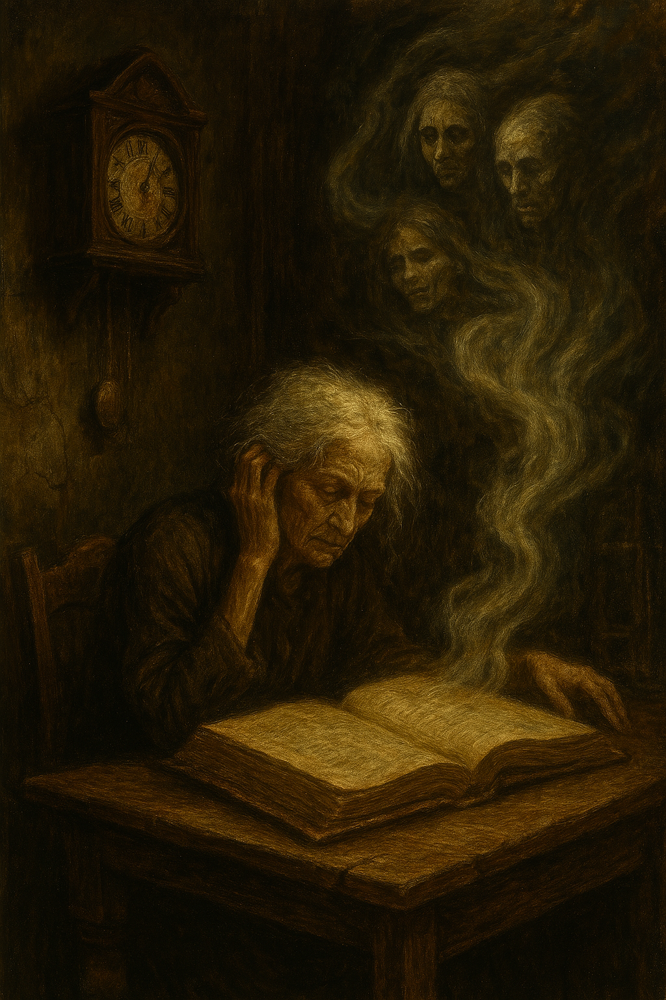
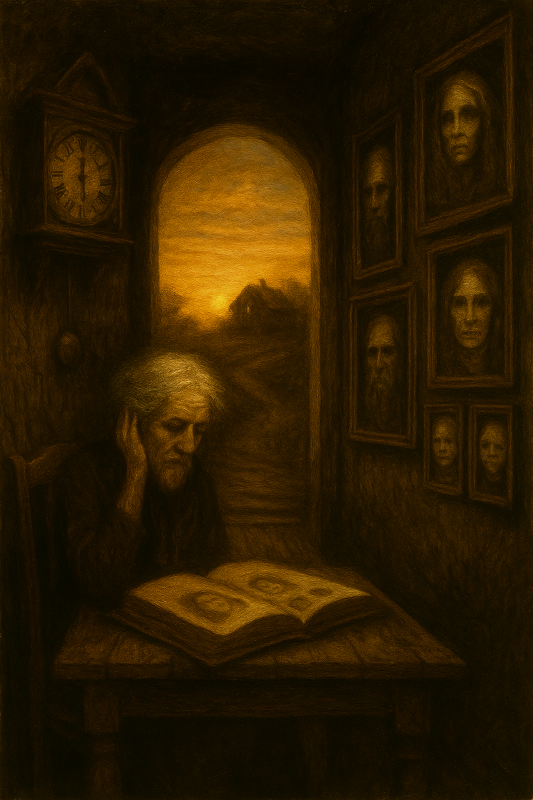

Whether listening to the clock or reading the book, the result was the same. The truth was revealed in a collective whisper that spread throughout the house: onehundred years ago, the family who lived there was accused of witchcraft and imprisoned by the townspeople. Before they died, they cast a curse: each generation would deliver three new souls to keep the house alive.

The entire structure began to beat like a giant heart. The portraits, clocks, and dolls came to life, moving in unison. The names Luna, Mateo, and Sara were engraved on the walls, replacing the old ones.
Midnight struck. Silence returned. When the sun rose over the hill, the house remained intact, motionless, asleep. Only one detail had changed: in the portraits in the hallway, there were three new faces. And in the darkness of the clock, the hands once again marked 11:59.
